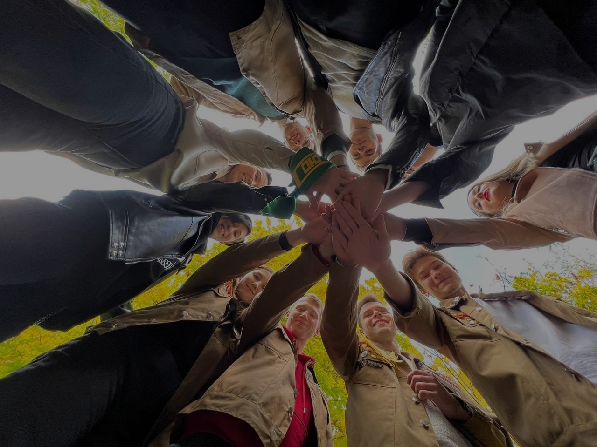
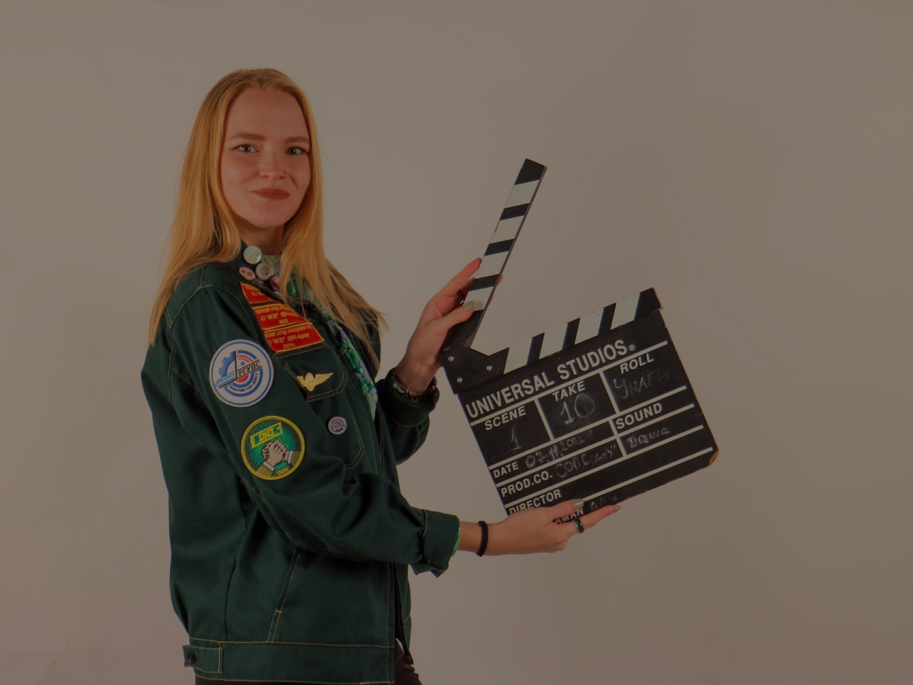
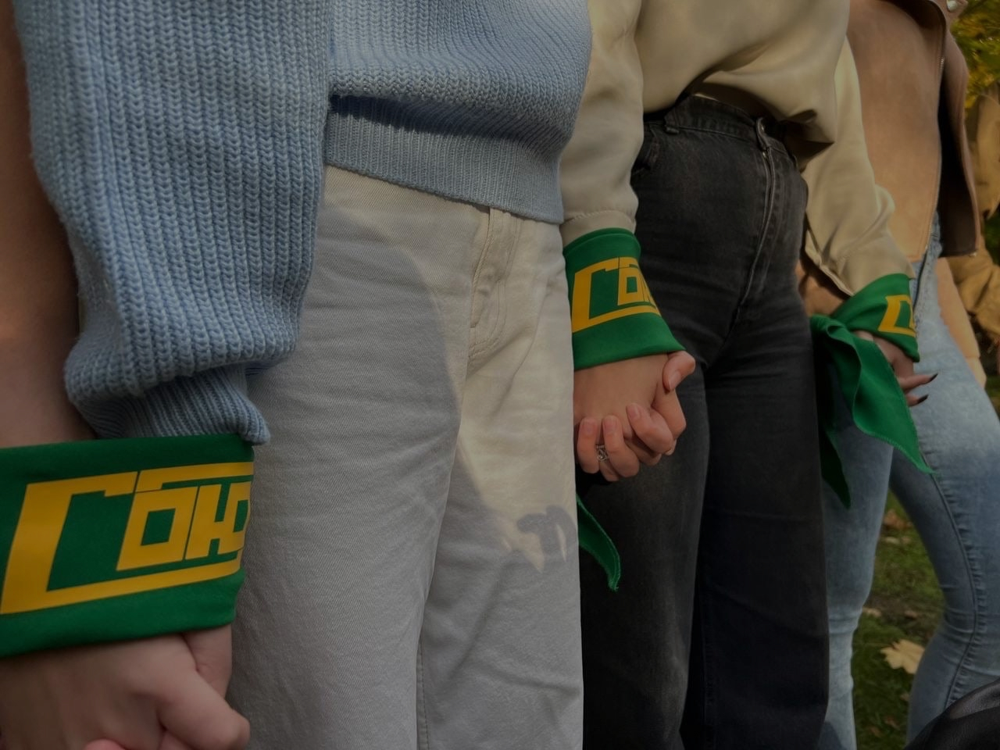
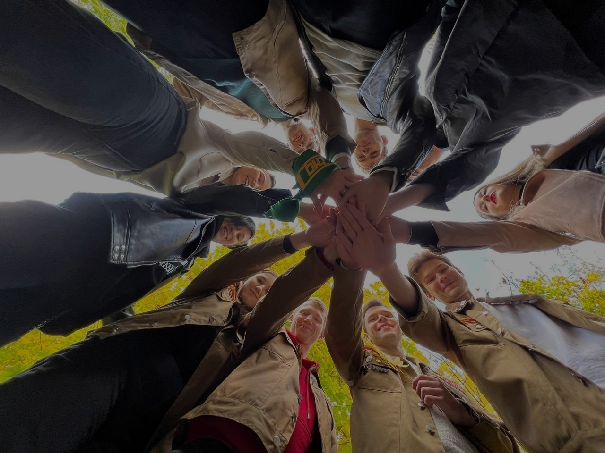
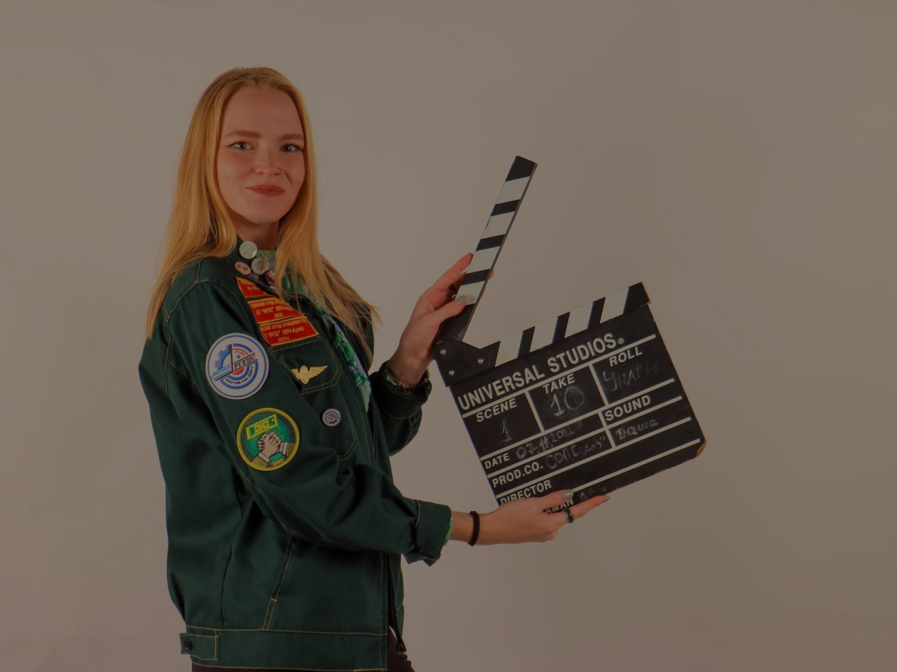
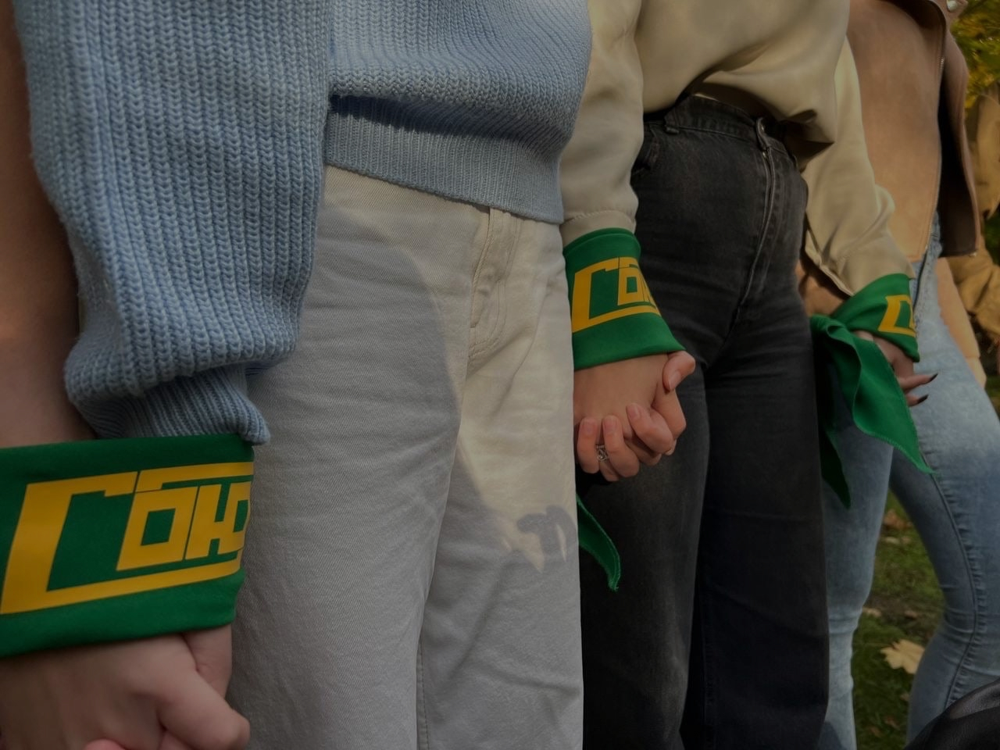

Отряд основан 15 октября в 2019 году под руководством замечательного человека Ильи Левшина
История отряда
Коллектив отряда СОЮЗ проделал немалую работу в развитии студенческого отряда проводников, за свою небольшую историю дал старт многим студентам в развитии их индивидуальных навыков, проработал взаимоотношения внутри отряда, сплотив каждого его участника в одно целое, и как единый механизм, работа каждого дала немалый результат как в локальных соревнованиях и мероприятиях, так и в глобальных.
Достижения отряда
У отряда не только богатая история, но и большие достижения:
-3 место в региональном конкурсе профессионального мастерства среди отрядов проводников (2022 г.)
- 3 место в номинации «Перфоманс. Театральная постановка» в конкурсе «Мы - отрядные таланты» (2022 г.)
- 1 место по волейболу в спартакиаде СОРГУПС 2021
- 1 место в окружной спартакиаде в общекомандном зачете (2022 г.)
- 2 место в конкурсе «Мистер и мисс РСОДОН» 2022г.
 




